01
Preparation
Getting the financial house in order
Buying power, deposit target and six clean months of statements.
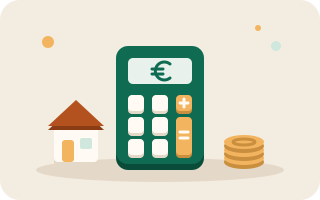
Calculate my buying power
Blocking step · ⏱ 1 evening · Free
The Central Bank of Ireland lets first-time buyers borrow up to four times their gross annual income. Movers are capped at 3.5×. Your income sets how much you can borrow, and the size of your deposit depends on what you have saved.
- Add both gross salaries if you are applying jointly
- Subtract any car loan or credit union repayments, because lenders stress-test them
- Write down the maximum price the calculator gives you
Worth knowing: Lenders can grant exemptions above the multiple, but they are rationed each quarter and go early in the year.
Open in my journey
Confirm the 10% deposit
Blocking step · ⏱ Ongoing · 10% of price
You need at least 10% of the purchase price, whether this is your first home or not. The deposit is separate from the fees below.
- Set up a standing order for the day after payday
- Keep the deposit in a separate account you never touch
- A documented family gift counts, but the lender will want a letter saying it is not a loan
Worth knowing: Six months of regular saving at roughly your future repayment is the strongest thing on your file.
Open in my journey
Set aside cash for the extra costs
Blocking step · ⏱ Ongoing · About €3,550 + 1% stamp duty
Stamp duty, solicitor, survey and valuation are paid from your own cash, not the mortgage.
- Stamp duty: 1% of the price up to €1m
- Solicitor: €2,000-3,000 plus VAT and outlays
- Structural survey about €400, bank valuation about €150
Worth knowing: Budget another €1,500-2,000 for moving, locks and the first utility bills.
Open in my journey
Keep the bank account clean for six months
Blocking step · ⏱ 6 months · Free
Underwriters go through six months of statements line by line to judge how you manage money.
- No online betting transactions, at all
- No unauthorised overdrafts or returned direct debits
- Rent paid on time from the same account every month
Worth knowing: Revolut and credit union accounts count too. The lender will ask for those statements as well.
Open in my journey
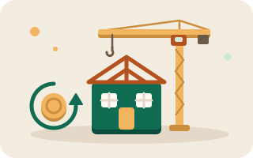
Check Help to Buy eligibility
Optional step · ⏱ 2 weeks · Refund up to €30,000
Help to Buy refunds income tax and DIRT you already paid, up to €30,000 or 10% of the price, on new builds only.
- Apply through Revenue's myAccount and get your HTB code
- New builds and self-builds only. Second-hand homes do not qualify
- The First Home Scheme is a separate shared-equity option worth pricing
Worth knowing: The refund goes to the developer as part of your deposit, so approval must be in place before you sign.
Open in my journey
Create your ÉireHome Flow account
Blocking step · ⏱ 2 minutes · Free
An account saves your journey, so you can pick it up on your phone, your laptop or any other device. It is free and takes a couple of minutes.
- Choose Create account and enter your email and a password
- Confirm your email address from the link we send you
- Sign in on any other device to see the same progress
Worth knowing: Your account stores your email and the steps you have completed. The figures you type into the calculator stay in your browser.
Open in my journey
02
Approval in Principle
Proof that a lender will back you
Paperwork, bank or broker, and the letter agents ask for.
Choose a bank direct or a broker
Blocking step · ⏱ 1 week · Broker usually free to you
A broker compares the whole market in one application. Going direct can win you a lender-specific cashback offer.
- Ask the broker which lenders they are on panel with
- Weigh cashback against the rate. Cashback is paid once, but the rate applies for the whole term
- Check the lender's stance on your employment type before applying
Worth knowing: Lenders differ most on contract or probation income, and that is where a broker earns their keep.
Open in my journey
Gather six months of bank statements
Blocking step · ⏱ 2-3 days · Free
Every current, savings and Revolut account, complete, with no missing pages.
- Download PDFs directly from the bank, not screenshots
- Label each file with the account and the month
- Be ready to explain any lodgement over about €500
Worth knowing: One missing page is the single most common cause of a stalled application.
Open in my journey
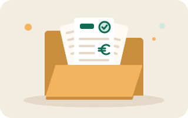
Gather payslips and the Employment Detail Summary
Blocking step · ⏱ 1 week · Free
Usually three recent payslips, your EDS from Revenue, and a salary certificate signed by your employer.
- Three most recent payslips
- Employment Detail Summary from myAccount
- Salary certificate confirming contract type and any bonus
Worth knowing: Self-employed applicants need two years of certified accounts and a tax clearance certificate instead.
Open in my journey
Evidence rent and savings
Blocking step · ⏱ Ongoing · Free
Rent plus regular saving is how you prove repayment capacity above your current outgoings.
- Rent paid by standing order, visible on statements
- A savings pattern that has not been dipped into
- A short written explanation of any gap
Worth knowing: Rent plus savings should roughly match the future mortgage repayment, as underwriters compare the two.
Open in my journey
Receive the AIP letter
Blocking step · ⏱ 1-3 weeks · Free
Approval in Principle states what the lender will lend, subject to valuation and final checks. It usually lasts six months.
- Check the amount, the term and the expiry date
- Save a PDF to your phone for viewings
- Put the expiry date in your calendar, as renewing needs fresh statements
Worth knowing: No estate agent in Ireland will take a bid seriously without it.
Open in my journey
03
Search & Bidding
Daft.ie and MyHome.ie
Viewings, agent language and bids up to Sale Agreed.
Pick an area, check sold prices
Blocking step · ⏱ 1 week · Free
Asking prices are set by the seller. The Residential Property Price Register shows what homes actually sold for.
- Compare asking against the register, street by street
- Check the commute at the hour you would really travel
- Look at BER ratings. Going from a C to a B can cost €15,000 in upgrades
Worth knowing: Set alerts on Daft and MyHome for your area and price band, because good stock goes in days.
Open in my journey
Learn the Irish vocabulary
Optional step · ⏱ 1 evening · Free
The process has its own vocabulary, and agents will assume you know it.
- Sale Agreed is not binding. Gazumping is still possible until contracts are signed
- Private treaty vs public auction changes the rules entirely
- The booking deposit is refundable, but the contract deposit is not
Worth knowing: BER is legally required on every listing, so be wary of any listing that does not show one.
Open in my journey
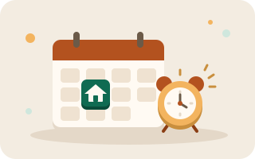
Book viewings
Blocking step · ⏱ 2-8 weeks · Free
See at least five properties before you bid, including two you think are wrong.
- Email the agent, then confirm by phone
- Photograph damp patches, meter boxes and the attic hatch
- Ask why the seller is moving and how long it has been listed
Worth knowing: Go back a second time on a wet weekday evening. Houses look different when it rains and the road is busy.
Open in my journey
Log every bid
Blocking step · ⏱ 1-8 weeks · Free
Bidding is verbal and unregulated, so keep your own record.
- Note the amount, the date and who you spoke to
- Set your walk-away number before you start
- Never bid without AIP in hand
Worth knowing: Ask the agent to confirm each bid by email. It helps protect you against phantom bids.
Open in my journey
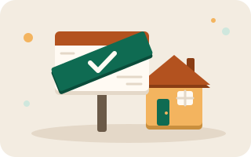
Reach Sale Agreed
Blocking step · ⏱ 1 week · €3,000-5,000 refundable
Your bid is accepted and you pay a booking deposit, usually €3,000-5,000, to take the house off the market.
- Get the booking deposit receipt in writing
- Give the agent your solicitor's details
- Ask for the sales advice notice to be issued quickly
Worth knowing: The booking deposit is fully refundable until you sign contracts, so the sale is not final yet.
Open in my journey
04
Legal & Contracts
Solicitor, survey and valuation
Contracts, survey, valuation and mandatory insurance.
Hire a solicitor
Blocking step · ⏱ 1 week · €2,000-3,000 + VAT
Conveyancing is the legal transfer of title, and the timeline mostly runs at your solicitor's pace.
- Ask for a fixed quote including outlays and searches
- Ask how many files the firm closes per month
- Give them the sales advice notice as soon as it lands
Worth knowing: Choose based on how quickly they respond. A cheap quote is no bargain if nobody answers the phone during the August holidays.
Open in my journey
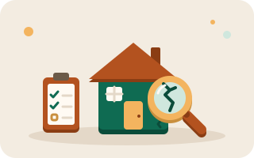
Book the structural survey
Blocking step · ⏱ 1-2 weeks · €300-500
An independent engineer walks the house and writes up what is wrong with it.
- Use an engineer on the Engineers Ireland or SCSI register
- Ask for photographs and a repair cost estimate
- For apartments, read the management company accounts too
Worth knowing: Survey findings give you room to negotiate. A roof that needs €6,000 of work is a reason to ask for €6,000 off before contracts.
Open in my journey
Request the lender's valuation
Blocking step · ⏱ 1 week · About €150
The bank values the property for its own security, from its own panel of valuers.
- Book it through the lender or broker, not privately
- A valuation is not a survey. It is there to protect the bank
- A down-valuation means you make up the gap in cash
Worth knowing: If the valuation comes in under the agreed price, it is quite normal to renegotiate.
Open in my journey
Take out mortgage protection and home insurance
Blocking step · ⏱ 1-2 weeks · €25-60 per month
Both are mandatory before drawdown, and neither has to be bought from your lender.
- Shop around for mortgage protection, as the bank's quote is rarely the cheapest
- Home insurance must cover the rebuild cost, not the purchase price
- Declare health conditions honestly, because a policy that gets voided is worse than paying a loading
Worth knowing: Underwriting can take weeks if there is any medical history, so start it before contracts.
Open in my journey
Sign contracts and pay the deposit
Blocking step · ⏱ 1-2 weeks · 10% less booking deposit
You sign, pay the balance of the 10% deposit and the sale becomes legally binding.
- Read the special conditions with your solicitor
- Agree a closing date that matches your notice period on rent
- Confirm what fixtures and fittings are included in writing
Worth knowing: From the moment contracts are exchanged, gazumping is off the table.
Open in my journey
05
Keys in Hand
Drawdown and closing day
Loan offer, drawdown, closing day and the move.
Receive the final loan offer
Blocking step · ⏱ 1-2 weeks · Free
The formal offer replaces the AIP and sets the rate, the term and the conditions.
- Check the rate, the term and any cashback conditions
- Compare fixed against variable one last time
- Sign and return with the insurance policies attached
Worth knowing: Green rates for a B3 BER or better can be worth several thousand over a fixed term.
Open in my journey
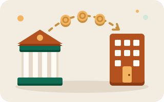
Draw down the funds
Blocking step · ⏱ 3-10 days · Free
Your solicitor requests the money for closing day and the lender pays it to them.
- Confirm the exact closing balance with your solicitor
- Transfer your share early, because daily transfer limits catch people out
- Check the first repayment date
Worth knowing: Never send money on emailed bank details alone; ring your solicitor's office to verify them.
Open in my journey
Close and collect the keys
Blocking step · ⏱ 1 day · Closing balance
Title transfers, the balance is paid and the agent hands over the keys.
- Take meter readings and photograph them
- Get every key, fob and alarm code
- Change the locks in the first week
Worth knowing: Do a final walk-through before the money moves to make sure the house is in the condition you agreed.
Open in my journey
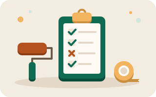
Walk the snag list
Optional step · ⏱ 1 week · €300-600 for a snagger
New builds especially: log every defect while the builder is still on the hook.
- Hire a professional snagger for a new build
- Photograph every item with a room name
- Send the list in writing with a deadline
Worth knowing: Keep the list open until each item is signed off, because the warranty period has already started.
Open in my journey
06
Settling In
Floors, curtains and the boiler
Furnishing the home and keeping it running.
Switch the utilities into your name
Blocking step · ⏱ 1 week · Deposits vary
Electricity, gas, broadband and bins, all in the first week.
- Submit your day-one meter photos with each switch
- Switching supplier when you move in is an easy way to save
- Set up the bin collection before your first bin day
Worth knowing: Register the alarm and check whether the broadband line is fibre before you commit to a plan.
Open in my journey
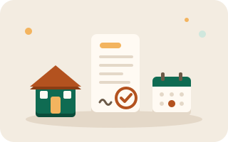
Register for Local Property Tax
Blocking step · ⏱ 1 day · Band-dependent
Revenue needs the property registered in your name, banded on its value.
- Register through myAccount using the property ID
- Check whether the seller pre-paid the year
- Set the payment method you actually want
Worth knowing: Your solicitor confirms LPT compliance at closing, but the following year's return is yours.
Open in my journey
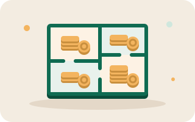
Set a furnishing budget by room
Optional step · ⏱ 1 evening · €3,000-10,000
Flooring and window coverings can easily eat the first €5,000 if you do not plan ahead.
- Rank rooms: bedroom and kitchen first, spare room last
- Price flooring and blinds before sofas
- Leave 15% for the things you forget
Worth knowing: Second-hand solid furniture is cheaper and better than new flat-pack. Measure doorways first.
Open in my journey
Floors before furniture
Optional step · ⏱ 1-2 weeks · €25-60 per m²
Laying floors in an empty house is cheaper and much faster.
- Measure each room and add 10% for cuts
- Let laminate or engineered board acclimatise for 48 hours
- Sort underlay and skirting in the same order
Worth knowing: If you are painting too, paint first, floors second, skirting last.
Open in my journey
Measure for curtains and blinds
Optional step · ⏱ 1 weekend · €60-250 per window
Measure the rail rather than the glass, and decide on the length before you order.
- Rail width plus 15-20cm each side
- Sill length or floor length, decided room by room
- Blackout in bedrooms, especially east-facing
Worth knowing: Order one room first and live with it for a week before doing the whole house.
Open in my journey
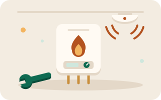
Service the boiler and test the alarms
Optional step · ⏱ 1 day · €90-150
Get a baseline service and put safety checks on a calendar.
- Book an RGI-registered engineer for gas
- Test smoke and CO alarms, replace anything over ten years old
- File the BER cert, warranties and manuals in one place
Worth knowing: Annual boiler servicing is a condition of most home insurance policies, so keep the receipts.
Open in my journey